Clip 1 A/B · A: case 1, words only (ltx-2.5) vs B: case 3, three portraits as @references (minimax-h3)
SETTING:
Present-day autumn, over one school week in a quiet suburban town. The second-floor classroom has cream walls, east windows facing a paved courtyard, and desks in rows. Evan sits beside the windows; Maya and Leo sit at the neighboring desks, close enough to see his paper. Morning light falls across the desktops, while the corridor beyond the classroom door stays dim. The upstairs bedroom has pale blue walls, one window facing a quiet street, and a wooden desk beneath it. It sits above the family kitchen, away from the school; at night, the window reflects the desk lamp rather than the street. Evan has short black hair, a navy hoodie, and round glasses. Maya has a dark ponytail, a mustard cardigan, and silver stud earrings. Leo has curly brown hair, a gray sweatshirt, and a red wristband. Keep these clothes and details unchanged. The film uses naturalistic light, restrained contrast, and a softly muted grade: cool classroom mornings, warm lamplight at night, with no exaggerated change in color when Evan succeeds.
CLIP 1 OF 3 (15 seconds; what happens in clip 2 is not shown here):
The second-floor classroom has cream walls, east windows facing a paved courtyard, and desks in rows. Begin in a medium shot of Evan beside the windows. Evan has short black hair, a navy hoodie, and round glasses. He turns over his returned test. Cut close: “38/100” is clear; other marks are indistinct. Maya has a dark ponytail, a mustard cardigan, and silver stud earrings. Leo has curly brown hair, a gray sweatshirt, and a red wristband. Maya leans over and points at the score. Leo looks, smirks, and nudges Maya; she covers a mocking grin. Evan lowers his eyes and pulls the paper toward himself. End close on his hand covering the score.
The references · sent as 3 named references (@evan @maya @leo) to minimax-h3
@evan · V3/runs/v3-student-1/refs/portraits/evan.png One young man, shown from the chest up, looking toward the camera.: Short, thick black hair swept loosely to the side; clean-shaven face, dark eyebrows, neutral closed-mouth expression; round black-rimmed glasses; plain dark navy pullover hoodie with drawstrings.
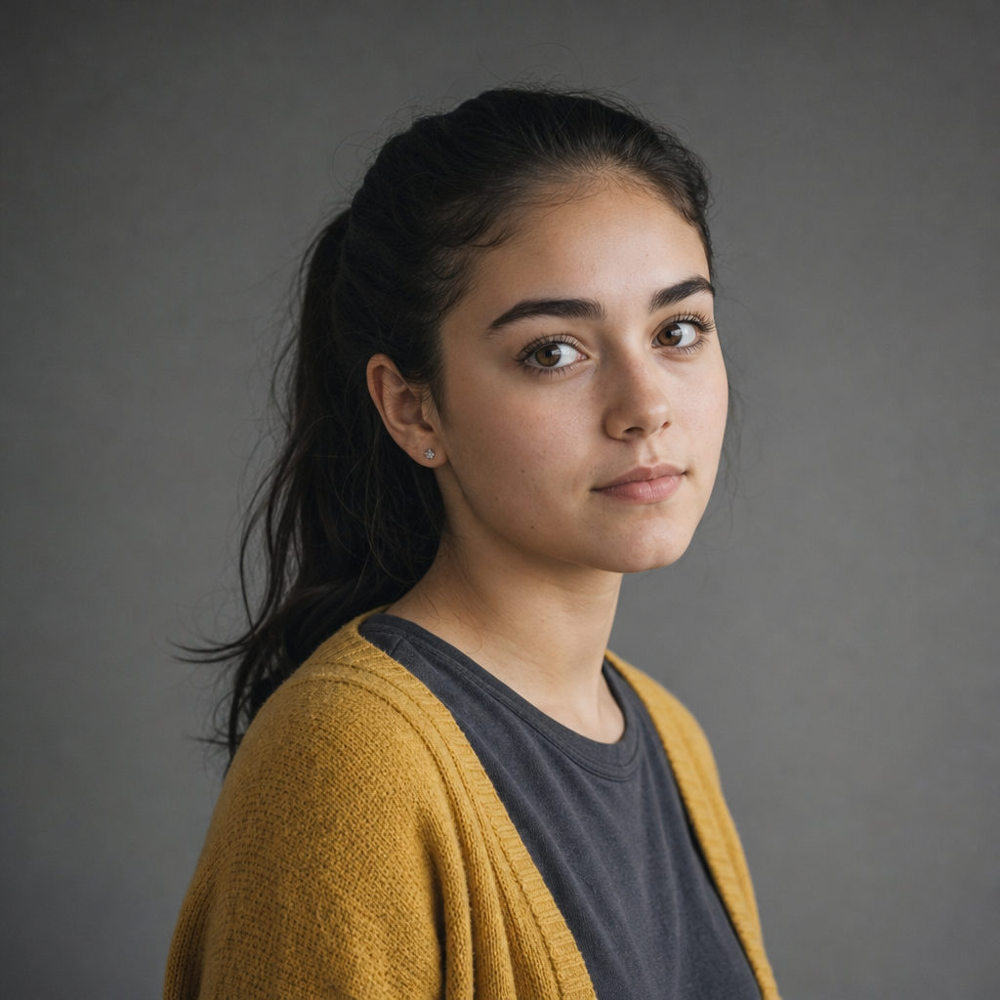
@maya · V3/runs/v3-student-1/refs/portraits/maya.png Maya has dark hair pulled into a ponytail, brown eyes, and a small stud earring, and wears a mustard-yellow knit cardigan over a charcoal-gray shirt against a plain gray background.
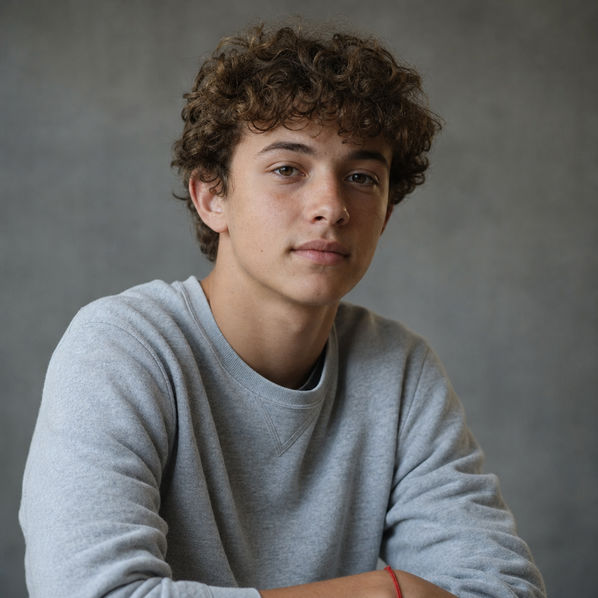
@leo · V3/runs/v3-student-1/refs/portraits/leo.png A young person with short, curly brown hair wears a light gray sweatshirt and a thin red wrist bracelet, facing the camera against a plain gray background.
A: case 1, words only (ltx-2.5)
clip-1 · ltx-2.5 text-to-video · 15 s · audio off · 720 credits in all (2 attempts) · own review no
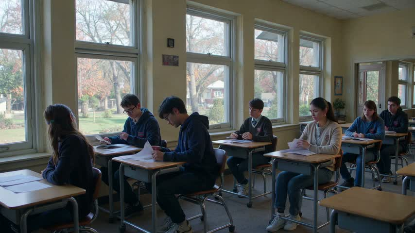
first
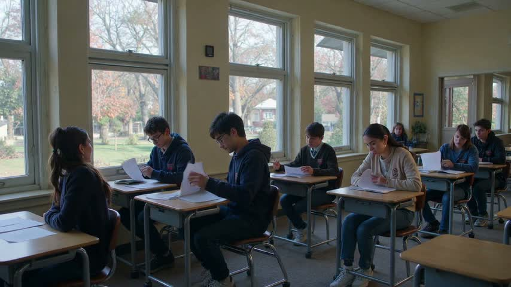
beat 1 · 1.5 s
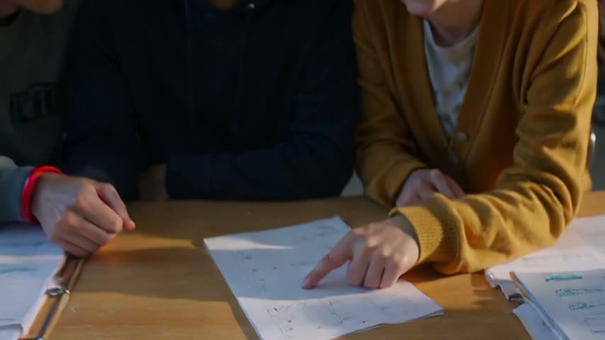
beat 2 · 4.5 s
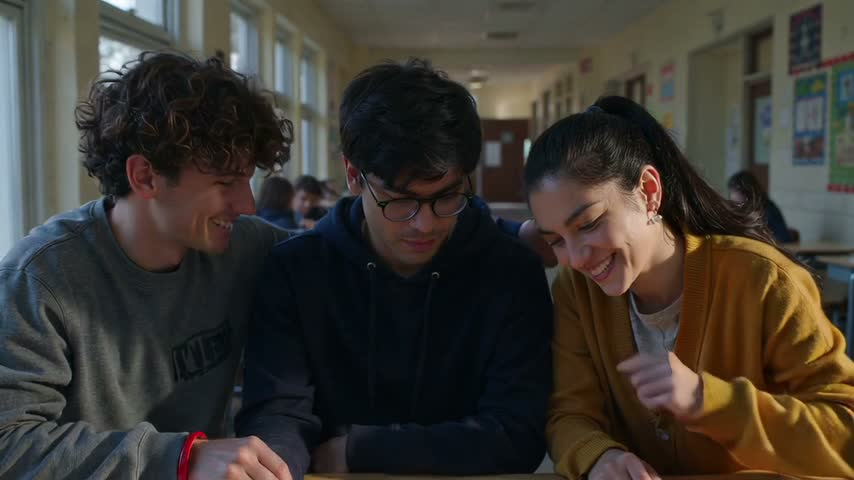
beat 3 · 7.5 s
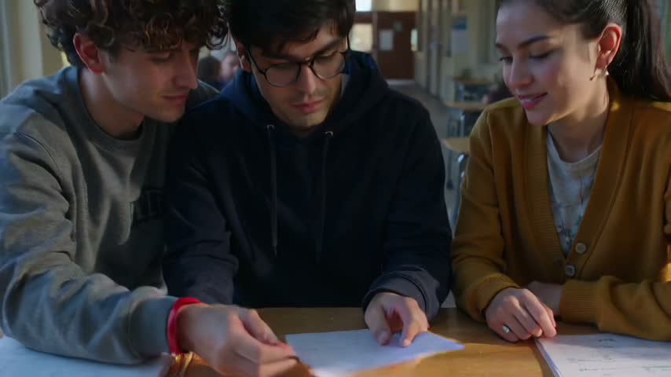
beat 4 · 10.5 s
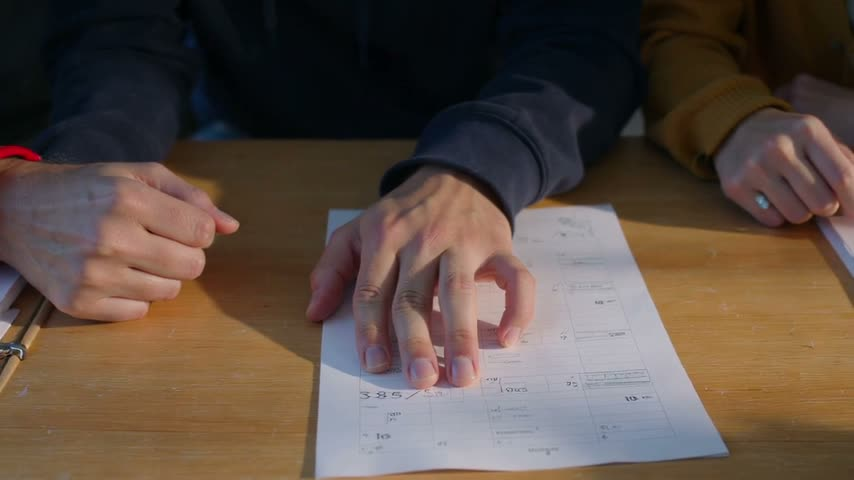
beat 5 · 13.5 s
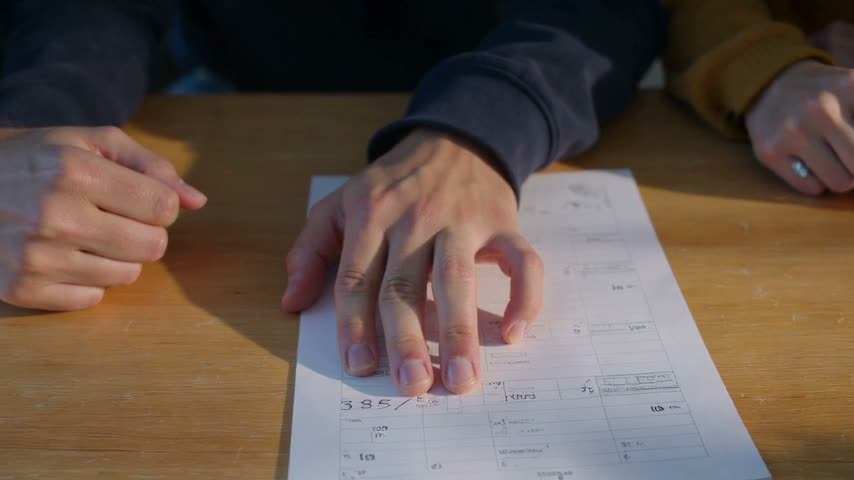
last
review
beat 1
yesyes
Evan lifts and turns a sheet at his desk beside the classroom windows.
beat 2
yesno
Maya points at the paper, but no clearly readable 38/100 is visible.
beat 3
yesno
Leo smiles, but a nudge toward Maya is not evident; Maya's grin is uncovered.
beat 4
yesno
Evan touches the paper with bent fingers; his palm does not conceal the score.
beat 5
yesno
Close-up shows Evan's hand on the sheet, but score-like lettering remains exposed below his fingertips.
failures: beat 2 (3–6 s) must visibly show the action: Maya points at the clearly visible score, 38/100. (seen instead: Maya points at the paper, but no clearly readable 38/100 is visible.); beat 3 (6–9 s) must visibly show the action: Smirking Leo nudges Maya; her hand conceals a mocking grin. (seen instead: Leo smiles, but a nudge toward Maya is not evident; Maya's grin is uncovered.); beat 4 (9–12 s) must visibly show the action: Evan pulls the paper inward, his palm concealing the score. (seen instead: Evan touches the paper with bent fingers; his palm does not conceal the score.); beat 5 (12–15 s) must visibly show the action: Still close-up of Evan’s hand covering the score. (seen instead: Close-up shows Evan's hand on the sheet, but score-like lettering remains exposed below his fingertips.); the lettering must read exactly '38/100' (it read "Visible characters appear to read '3', '8', '5', '/'; the remainder is obscured or illegible."); the same people and place in every shot
prompt sent (1707 chars)
Create a 15-second silent naturalistic drama about Evan’s returned test in a present-day suburban school classroom, widescreen 16:9. Cool autumn morning light, realistic textures, restrained contrast and quiet social tension. Five coherent shots maintain the same students, clothing, paper and neighboring desks throughout. 0–3 seconds: medium shot of Evan, short black hair, navy hoodie and round glasses, turning over his returned test beside the east windows; cream walls and rows of desks frame the second-floor classroom, with a paved courtyard below; slowly push in. 3–6 seconds: close shot of the paper as Maya, already leaning beside Evan, points at the clearly legible score, exactly '38/100'; all other marks are indistinct; her dark ponytail, mustard cardigan and silver stud earrings remain visible at the upper edge, morning light crossing the desktop; slide gently sideways. 6–9 seconds: medium three-shot of Leo, curly brown hair, gray sweatshirt and red wristband, nudging Maya while smirking toward the test; Maya’s hand conceals a mocking grin, Evan’s eyes are downcast, and the corridor beyond the classroom door is dim; make a restrained lateral move. 9–12 seconds: tight shot of Evan’s hand pulling the paper toward himself across the sunlit wooden desktop; his palm rests over the score by the end, fully concealing it; ease closer. 12–15 seconds: final close-up of Evan’s motionless hand covering the score, the paper against his navy cuff on the desktop; finish the push and settle into a still hold for the final two seconds. Softly muted grade, measured pacing without a dramatic color shift. No subtitles, text overlays or additional scenes; clip 1 of 3 ends on the covered score.
B: case 3, three portraits as @references (minimax-h3)
clip-2 · minimax-h3 text-to-video · 15 s · audio off · 360 credits in all (1 attempt) · own review no
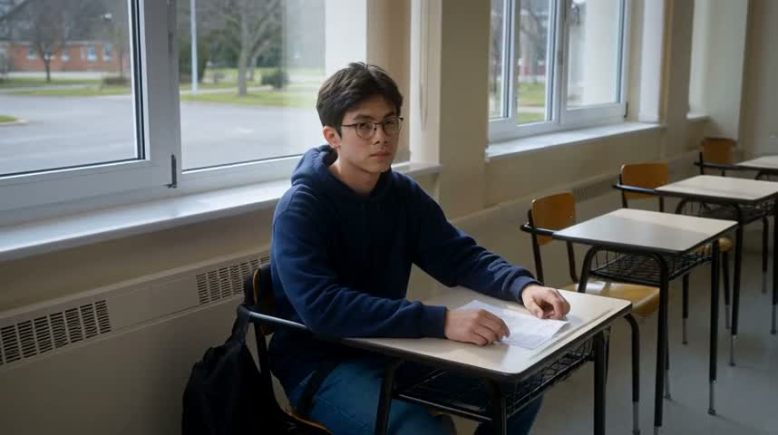
first
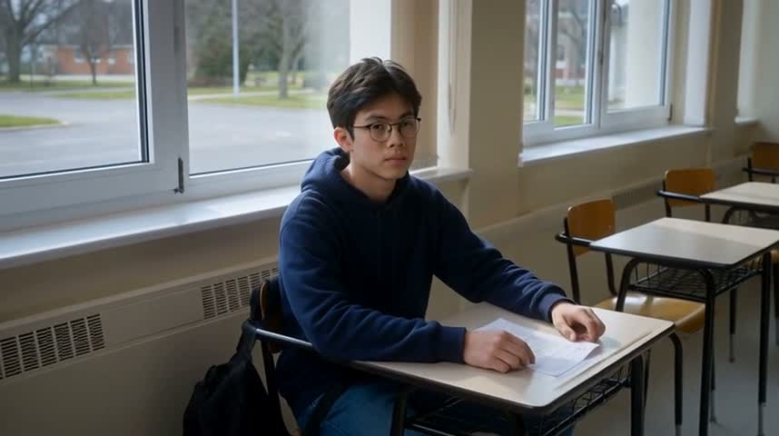
beat 1 · 1.5 s
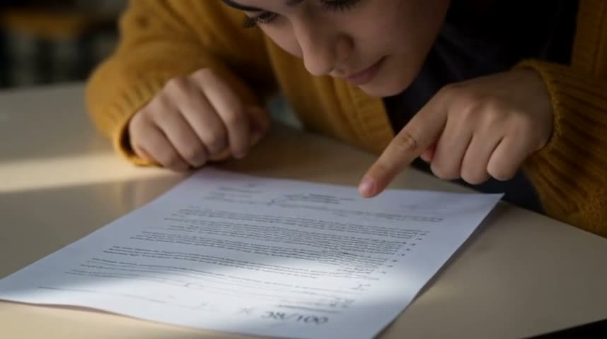
beat 2 · 4.5 s
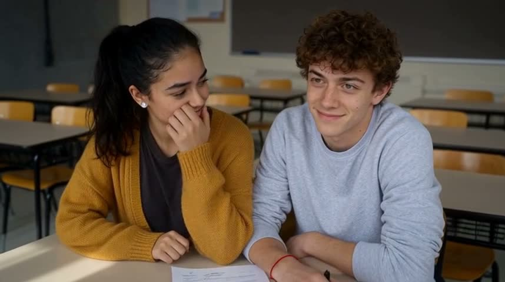
beat 3 · 7.5 s
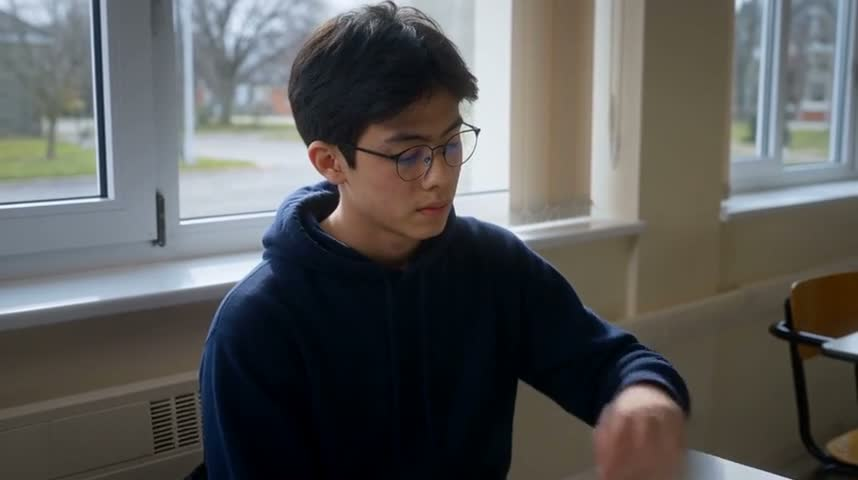
beat 4 · 10.5 s
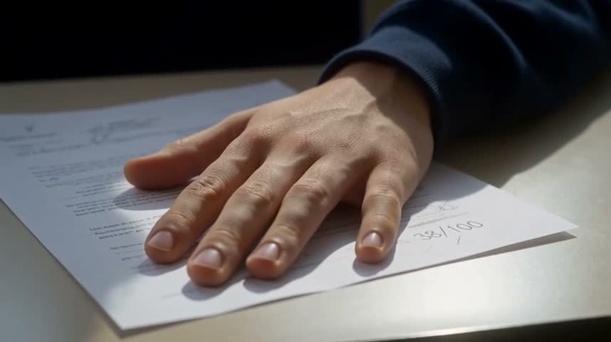
beat 5 · 13.5 s
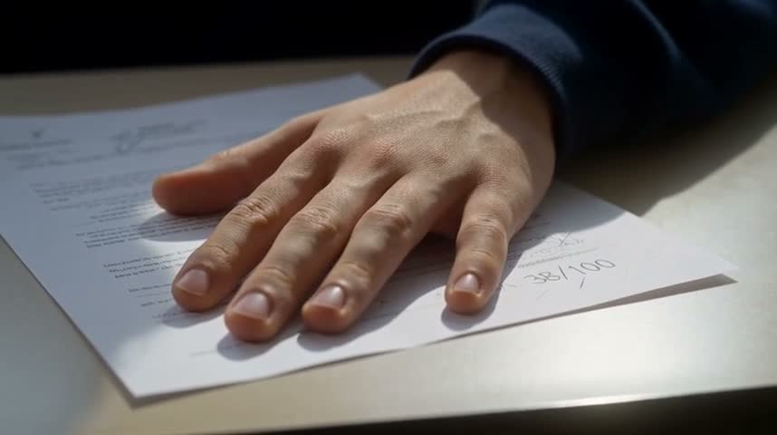
last
review
beat 1
yesunclear
Evan sits at a desk beside the classroom windows with the test under his hands. The first and 1.5-second frames do not establish that he turns it over.
beat 2
yesyes
Maya leans over the test and points toward it. The score near the lower edge is blurred rather than clearly visible, and her fingertip is not directly beside it.
beat 3
yesunclear
Leo smirks beside Maya, who covers her smiling mouth with her hand. Their arms are adjacent, but a nudge cannot be established from the sampled frame.
beat 4
yesunclear
Evan looks downward and reaches toward the desk. The test is mostly outside the frame, so pulling it beneath his palm is not established.
beat 5
yesno
The close-up shows Evan's palm resting on the test, but 38/100 remains exposed to the right of his hand in both the 13.5-second and final frames.
identity
yes
Evan: short black hair: Evan's face and short, side-swept black hair are consistent with the reference in his classroom shots.
identity
yes
Evan: navy hoodie: Evan wears a navy pullover hoodie throughout his visible shots; the navy cuff continues into the hand close-up.
identity
yes
Evan: round glasses: Thin, dark, rounded glasses remain visible on Evan and match the reference style.
identity
yes
Maya: dark ponytail: Maya's facial appearance and dark hair tied into a ponytail are consistent with the reference.
identity
yes
Maya: mustard cardigan: Maya wears a mustard knitted cardigan over a dark shirt in both of her sampled shots.
identity
yes
Maya: silver stud earrings: A bright silver stud is visible on Maya's exposed ear in the two-person shot, consistent with the reference.
identity
yes
Leo: curly brown hair: Leo's face and dense curly brown hair are consistent with the reference.
identity
yes
Leo: gray sweatshirt: Leo wears a light gray crewneck sweatshirt matching the reference.
identity
yes
Leo: red wristband: A thin red wristband is visible on Leo's wrist at the desk.
failures: beat 5 must visibly show: Still close-up of Evan's hand concealing the score. (seen: The close-up shows Evan's palm resting on the test, but 38/100 remains exposed to the right of his hand in both the 13.5-second and final frames.)
prompt sent (1841 chars)
Create a 15-second silent naturalistic school-drama scene about a returned test, widescreen 16:9. Cool autumn morning light, restrained contrast, realistic classroom textures and an intimate, uncomfortable mood. Five coherent shots in the same second-floor classroom, preserving faces, clothing, desk positions and the test throughout. 0–3 seconds: medium shot of @evan, a young man with short black hair, round black-rimmed glasses and a navy hoodie, turning over his returned test at the window-side desk; cream walls and east windows overlooking a paved courtyard establish the room, with a slow camera push toward him. 3–6 seconds: tight oblique close-up of the test, its score reading exactly '38/100', all other marks indistinct; @maya, dark ponytail, mustard cardigan over a charcoal shirt and silver stud earrings, is leaned over from the neighboring desk and points at the score; morning light crosses the paper as the camera slides slightly sideways. 6–9 seconds: medium two-shot of @leo, short curly brown hair, gray sweatshirt and thin red wristband, nudging @maya with his elbow; his eyes remain on the test with a smug smirk, while her hand conceals a mocking grin; neighboring desks remain in rows behind them, with a subtle lateral camera move. 9–12 seconds: medium close-up of @evan, eyes lowered and shoulders drawn inward, pulling the test toward himself with his palm covering the score; the window edge remains beside him, with a gentle push inward. 12–15 seconds: separate tight close-up of @evan's motionless hand covering the score on the test, only indistinct marks visible around his fingers on the sunlit desktop; hold this final composition without camera movement. Softly muted color, restrained pacing, no heightened color shift. No dialogue, subtitles or text overlays; clip 1 of 3 ends on the concealed score.